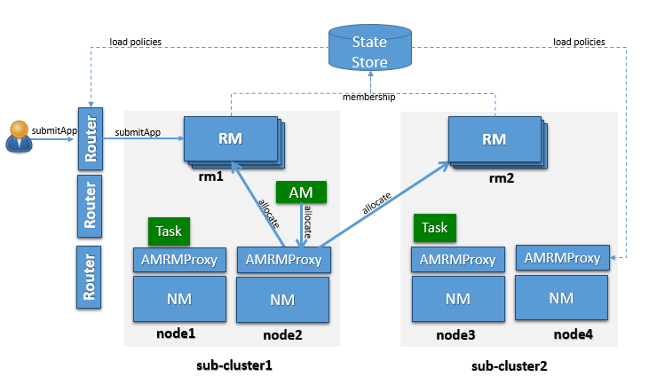
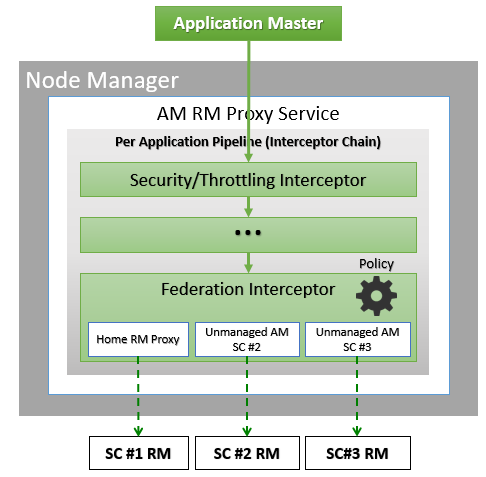
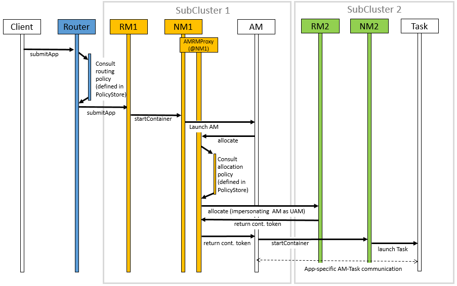

YARN is known to scale to thousands of nodes. The scalability of YARN is determined by the Resource Manager, and is proportional to number of nodes, active applications, active containers, and frequency of heartbeat (of both nodes and applications). Lowering heartbeat can provide scalability increase, but is detrimental to utilization (see old Hadoop 1.x experience). This document described a federation-based approach to scale a single YARN cluster to tens of thousands of nodes, by federating multiple YARN sub-clusters. The proposed approach is to divide a large (10-100k nodes) cluster into smaller units called sub-clusters, each with its own YARN RM and compute nodes. The federation system will stitch these sub-clusters together and make them appear as one large YARN cluster to the applications. The applications running in this federated environment will see a single massive YARN cluster and will be able to schedule tasks on any node of the federated cluster. Under the hood, the federation system will negotiate with sub-clusters resource managers and provide resources to the application. The goal is to allow an individual job to “span” sub-clusters seamlessly.
This design is structurally scalable, as we bound the number of nodes each RM is responsible for, and appropriate policies, will try to ensure that the majority of applications will reside within a single sub-cluster, thus the number of applications each RM will see is also bounded. This means we could almost linearly scale, by simply adding sub-clusters (as very little coordination is needed across them). This architecture can provide very tight enforcement of scheduling invariants within each sub-cluster (simply inherits from YARN), while continuous re-balancing across sub-cluster will enforce (less strictly) that these properties are also respected at a global level (e.g., if a sub-cluster loses a large number of nodes, we could re-map queues to other sub-clusters to ensure users running on the impaired sub-cluster are not unfairly affected).
Federation is designed as a “layer” atop of existing YARN codebase, with limited changes in the core YARN mechanisms.
Assumptions:
OSS YARN has been known to scale up to about few thousand nodes. The proposed architecture leverages the notion of federating a number of such smaller YARN clusters, referred to as sub-clusters, into a larger federated YARN cluster comprising of tens of thousands of nodes. The applications running in this federated environment see a unified large YARN cluster and will be able to schedule tasks on any nodes in the cluster. Under the hood, the federation system will negotiate with sub-clusters RMs and provide resources to the application. The logical architecture in Figure 1 shows the main components that comprise the federated cluster, which are described below.

A sub-cluster is a YARN cluster with up to a few thousand nodes. The exact size of the sub-cluster will be determined considering ease of deployment/maintenance, alignment with network or availability zones and general best practices.
The sub-cluster YARN RM will run with work-preserving high-availability turned-on, i.e., we should be able to tolerate YARN RM, NM failures with minimal disruption. If the entire sub-cluster is compromised, external mechanisms will ensure that jobs are resubmitted in a separate sub-cluster (this could eventually be included in the federation design).
Sub-cluster is also the scalability unit in a federated environment. We can scale out the federated environment by adding one or more sub-clusters.
Note: by design each sub-cluster is a fully functional YARN RM, and its contribution to the federation can be set to be only a fraction of its overall capacity, i.e. a sub-cluster can have a “partial” commitment to the federation, while retaining the ability to give out part of its capacity in a completely local way.
YARN applications are submitted to one of the Routers, which in turn applies a routing policy (obtained from the Policy Store), queries the State Store for the sub-cluster URL and redirects the application submission request to the appropriate sub-cluster RM. We call the sub-cluster where the job is started the “home sub-cluster”, and we call “secondary sub-clusters” all other sub-cluster a job is spanning on. The Router exposes the ApplicationClientProtocol to the outside world, transparently hiding the presence of multiple RMs. To achieve this the Router also persists the mapping between the application and its home sub-cluster into the State Store. This allows Routers to be soft-state while supporting user requests cheaply, as any Router can recover this application to home sub-cluster mapping and direct requests to the right RM without broadcasting them. For performance caching and session stickiness might be advisable. The state of the federation (including applications and nodes) is exposed through the Web UI.
The AMRMProxy is a key component to allow the application to scale and run across sub-clusters. The AMRMProxy runs on all the NM machines and acts as a proxy to the YARN RM for the AMs by implementing the ApplicationMasterProtocol. Applications will not be allowed to communicate with the sub-cluster RMs directly. They are forced by the system to connect only to the AMRMProxy endpoint, which would provide transparent access to multiple YARN RMs (by dynamically routing/splitting/merging the communications). At any one time, a job can span across one home sub-cluster and multiple secondary sub-clusters, but the policies operating in the AMRMProxy try to limit the footprint of each job to minimize overhead on the scheduling infrastructure (more in section on scalability/load). The interceptor chain architecture of the ARMMProxy is showing in figure.

Role of AMRMProxy
Global Policy Generator overlooks the entire federation and ensures that the system is configured and tuned properly all the time. A key design point is that the cluster availability does not depend on an always-on GPG. The GPG operates continuously but out-of-band from all cluster operations, and provide us with a unique vantage point, that allows to enforce global invariants, affect load balancing, trigger draining of sub-clusters that will undergo maintenance, etc. More precisely the GPG will update user capacity allocation-to-subcluster mappings, and more rarely change the policies that run in Routers, AMRMProxy (and possible RMs).
In case the GPG is not-available, cluster operations will continue as of the last time the GPG published policies, and while a long-term unavailability might mean some of the desirable properties of balance, optimal cluster utilization and global invariants might drift away, compute and access to data will not be compromised.
NOTE: In the current implementation the GPG is a manual tuning process, simply exposed via a CLI (YARN-3657).
This part of the federation system is part of future work in YARN-5597.
The Federation State defines the additional state that needs to be maintained to loosely couple multiple individual sub-clusters into a single large federated cluster. This includes the following information:
The member YARN RMs continuously heartbeat to the state store to keep alive and publish their current capability/load information. This information is used by the Global Policy Generator (GPG) to make proper policy decisions. Also, this information can be used by routers to select the best home sub-cluster. This mechanism allows us to dynamically grow/shrink the “cluster fleet” by adding or removing sub-clusters. This also allows for easy maintenance of each sub-cluster. This is new functionality that needs to be added to the YARN RM but the mechanisms are well understood as it’s similar to individual YARN RM HA.
The sub-cluster on which the Application Master (AM) runs is called the Application’s “home sub-cluster”. The AM is not limited to resources from the home sub-cluster but can also request resources from other sub-clusters, referred to as secondary sub-clusters. The federated environment will be configured and tuned periodically such that when an AM is placed on a sub-cluster, it should be able to find most of the resources on the home sub-cluster. Only in certain cases it should need to ask for resources from other sub-clusters.
The federation Policy Store is a logically separate store (while it might be backed by the same physical component), which contains information about how applications and resource requests are routed to different sub-clusters. The current implementation provides several policies, ranging from random/hashing/round-robin/priority to more sophisticated ones which account for sub-cluster load, and request locality needs.
When an application is submitted, the system will determine the most appropriate sub-cluster to run the application, which we call as the application’s home sub-cluster. All the communications from the AM to the RM will be proxied via the AMRMProxy running locally on the AM machine. AMRMProxy exposes the same ApplicationMasterService protocol endpoint as the YARN RM. The AM can request containers using the locality information exposed by the storage layer. In ideal case, the application will be placed on a sub-cluster where all the resources and data required by the application will be available, but if it does need containers on nodes in other sub-clusters, AMRMProxy will negotiate with the RMs of those sub-clusters transparently and provide the resources to the application, thereby enabling the application to view the entire federated environment as one massive YARN cluster. AMRMProxy, Global Policy Generator (GPG) and Router work together to make this happen seamlessly.

The figure shows a sequence diagram for the following job execution flow:
To configure the YARN to use the Federation, set the following property in the conf/yarn-site.xml:
These are common configurations that should appear in the conf/yarn-site.xml at each machine in the federation.
| Property | Example | Description |
|---|---|---|
yarn.federation.enabled |
true |
Whether federation is enabled or not |
yarn.resourcemanager.cluster-id |
<unique-subcluster-id> |
The unique subcluster identifier for this RM (same as the one used for HA). |
Currently, we support ZooKeeper and SQL based implementations of the state-store.
Note: The State-Store implementation must always be overwritten with one of the below.
ZooKeeper: one must set the ZooKeeper settings for Hadoop:
| Property | Example | Description |
|---|---|---|
yarn.federation.state-store.class |
org.apache.hadoop.yarn.server.federation.store.impl.ZookeeperFederationStateStore |
The type of state-store to use. |
yarn.federation.state-store.zk.address |
host:port |
The address for the ZooKeeper ensemble. |
SQL: one must setup the following parameters:
| Property | Example | Description |
|---|---|---|
yarn.federation.state-store.class |
org.apache.hadoop.yarn.server.federation.store.impl.SQLFederationStateStore |
The type of state-store to use. |
yarn.federation.state-store.sql.url |
jdbc:mysql://<host>:<port>/FederationStateStore |
For SQLFederationStateStore the name of the DB where the state is stored. |
yarn.federation.state-store.sql.jdbc-class |
com.mysql.jdbc.jdbc2.optional.MysqlDataSource |
For SQLFederationStateStore the jdbc class to use. |
yarn.federation.state-store.sql.username |
<dbuser> |
For SQLFederationStateStore the username for the DB connection. |
yarn.federation.state-store.sql.password |
<dbpass> |
For SQLFederationStateStore the password for the DB connection. |
yarn.federation.state-store.sql.max-connections |
1 |
This is the maximum number of parallel connections each Router makes to the state-store. |
yarn.federation.state-store.sql.minimum-idle |
1 |
The property controls the minimum number of idle connections that HikariCP trie to maintain in the pool. |
yarn.federation.state-store.sql.pool-name |
YARN-Federation-DataBasePool |
Specifies the name of the connection pool used by the FederationSQLStateStore. |
yarn.federation.state-store.sql.max-life-time |
30m |
This property controls the maximum lifetime of a connection in the pool. |
yarn.federation.state-store.sql.idle-time-out |
10m |
This property controls the maximum amount of time that a connection is allowed to sit idle in the pool. |
yarn.federation.state-store.sql.conn-time-out |
10s |
Set the maximum amount of time that a client will wait for a connection from the pool. |
We provide scripts for MySQL and Microsoft SQL Server.
For MySQL, one must download the latest jar version 5.x from MVN Repository and add it to the CLASSPATH. Then the DB schema is created by executing the following SQL scripts in the database:
In the same directory we provide scripts to drop the Stored Procedures, the Tables, the User and the Database.
Note: the FederationStateStoreUser.sql defines a default user/password for the DB that you are highly encouraged to set this to a proper strong password.
The versions supported by MySQL are MySQL 5.7 and above:
For SQL-Server, the process is similar, but the jdbc driver is already included. SQL-Server scripts are located in sbin/FederationStateStore/SQLServer/.
The versions supported by SQL-Server are SQL Server 2008 R2 and above:
| Property | Example | Description |
|---|---|---|
yarn.federation.failover.enabled |
true |
Whether should retry considering RM failover within each sub-cluster. |
yarn.federation.non-ha.enabled |
false |
If our subCluster’s ResourceManager (RM) does not have High Availability (HA) enabled, we can configure this parameter as true. However, it is recommended to use RM HA in a production environment. |
yarn.client.failover-proxy-provider |
org.apache.hadoop.yarn.server.federation.failover.FederationRMFailoverProxyProvider |
A FailoverProxyProvider implementation that uses the FederationStateStore to determine the ResourceManager to connect to. This supports both HA and regular mode which is controlled by configuration. |
yarn.federation.blacklist-subclusters |
<subcluster-id> |
A list of black-listed sub-clusters, useful to disable a sub-cluster |
yarn.federation.policy-manager |
org.apache.hadoop.yarn.server.federation.policies.manager.WeightedLocalityPolicyManager |
The choice of policy manager determines how Applications and ResourceRequests are routed through the system. |
yarn.federation.policy-manager-params |
<binary> |
The payload that configures the policy. In our example a set of weights for router and amrmproxy policies. This is typically generated by serializing a policymanager that has been configured programmatically, or by populating the state-store with the .json serialized form of it. |
yarn.federation.subcluster-resolver.class |
org.apache.hadoop.yarn.server.federation.resolver.DefaultSubClusterResolverImpl |
The class used to resolve which sub-cluster a node belongs to, and which subcluster(s) a rack belongs to. |
yarn.federation.machine-list |
<path of machine-list file> |
Path of machine-list file used by SubClusterResolver. Each line of the file is a node with sub-cluster and rack information. Below is the example: node1, subcluster1, rack1 node2, subcluster2, rack1 node3, subcluster3, rack2 node4, subcluster3, rack2 |
To configure the yarn.federation.policy-manager-params parameter, which represents the weight policy for the default queue, and where the relevant information will be parsed as WeightedPolicyInfo.
We can use the following JSON format for configuration:
<property>
<name>yarn.federation.policy-manager-params</name>
<value>{"routerPolicyWeights":{"entry":[{"key":{"id":"SC-2"},"value":"0.3"},{"key":{"id":"SC-1"},"value":"0.7"}]},"amrmPolicyWeights":{"entry":[{"key":{"id":"SC-2"},"value":"0.4"},{"key":{"id":"SC-1"},"value":"0.6"}]},"headroomAlpha":"1.0"}</value>
</property>
This JSON configuration allows you to define the weight policy for default queue, where:
routerPolicyWeights section specifies the weightings for router policies. For instance, with a weight of 0.3 assigned to SC-2 and 0.7 assigned to SC-1, this configuration will allocate 30% of submitted application requests to SC-2 and 70% to SC-1.amrmPolicyWeights represents the allocation ratios for Application Master when request containers from different subclusters’ RM. For instance, when an AM requests containers, it will request 40% of the containers from SC-2 and 60% of the containers from SC-1.headroomAlpha used by policies that balance weight-based and load-based considerations in their decisions. For policies that use this parameter, values close to 1 indicate that most of the decision should be based on currently observed headroom from various sub-clusters, values close to zero, indicate that the decision should be mostly based on weights and practically ignore current load.Router Policy
Router Policy defines the logic for determining the routing of an application submission and determines the HomeSubCluster for the application.
AMRM Policy
AMRM Proxy defines the logic to split the resource request list received by AM among RMs.
Policy Manager
The PolicyManager is providing a combination of RouterPolicy and AMRMPolicy.
We can set policy-manager like this:
<!--
We provide 6 PolicyManagers, They have a common prefix: org.apache.hadoop.yarn.server.federation.policies.manager
1. HashBroadcastPolicyManager
2. HomePolicyManager
3. PriorityBroadcastPolicyManager
4. RejectAllPolicyManager
5. UniformBroadcastPolicyManager
6. WeightedLocalityPolicyManager
-->
<property>
<name>yarn.federation.policy-manager</name>
<value>org.apache.hadoop.yarn.server.federation.policies.manager.HashBroadcastPolicyManager</value>
</property>
We will provide a set of commands to view and save queue policies.
The Queue Policy(SubClusterPolicyConfiguration) include the following:
| Property | Description |
|---|---|
queue |
Queue for Job submission |
policyType |
Policy Manager Class name, Default is UniformBroadcastPolicyManager |
policyParams |
It stores serialized objects of WeightedPolicyInfo. |
WeightedPolicyInfo include the following:
Weight for routing applications to different subclusters. We will route the application to different subclusters based on the configured weights. Assuming we have two subclusters, SC-1 and SC-2, with a weight of 0.7 for SC-1 and 0.3 for SC-2, the application will be allocated in such a way that 70% of the applications will be assigned to SC-1 and 30% to SC-2.
Weight for resource request from ApplicationMaster (AM) to different subclusters’ Resource Manager (RM). Assuming we have two subclusters, SC-1 and SC-2, with a weight of 0.6 for SC-1 and 0.4 for SC-2, When AM requesting resources, 60% of the requests will be made to the Resource Manager (RM) of SC-1 and 40% to the RM of SC-2.
used by policies that balance weight-based and load-based considerations in their decisions. For policies that use this parameter, values close to 1 indicate that most of the decision should be based on currently observed headroom from various sub-clusters, values close to zero, indicate that the decision should be mostly based on weights and practically ignore current load.
Similar to YARN-2962, We have implemented hierarchical storage for applications in the ZooKeeper federation store to manage the number of nodes under a specific Znode.
We can configure yarn.resourcemanager.zk-appid-node.split-index, default is 0, Index at which last section of application id (with each section separated by _ in application id) will be split so that application znode stored in zookeeper RM state store will be stored as two different znodes (parent-child). Split is done from the end. For instance, with no split, appid znode will be of the form application_1352994193343_0001. If the value of this config is 1, the appid znode will be broken into two parts application_1352994193343_000 and 1 respectively with former being the parent node. application_1352994193343_0002 will then be stored as 2 under the parent node application_1352994193343_000. This config can take values from 0 to 4. 0 means there will be no split. If configuration value is outside this range, it will be treated as config value of 0(i.e. no split). A value larger than 0 (up to 4) should be configured if you are storing a large number of apps in ZK based RM state store and state store operations are failing due to LenError in Zookeeper.
These are extra configurations that should appear in the conf/yarn-site.xml at each ResourceManager.
| Property | Example | Description |
|---|---|---|
yarn.resourcemanager.epoch |
<unique-epoch> |
The seed value for the epoch. This is used to guarantee uniqueness of container-IDs generate by different RMs. It must therefore be unique among sub-clusters and well-spaced to allow for failures which increment epoch. Increments of 1000 allow for a large number of sub-clusters and practically ensure near-zero chance of collisions (a clash will only happen if a container is still alive for 1000 restarts of one RM, while the next RM never restarted, and an app requests more containers). |
Optional:
| Property | Example | Description |
|---|---|---|
yarn.federation.state-store.heartbeat-interval-secs |
60 |
The rate at which RMs report their membership to the federation to the central state-store. |
How to configure the cleanup of applications
The Router supports storing scheduled applications in the StateStore. However, as the number of applications increases, it’s essential to provide a mechanism for application cleanup. We have implemented an automatic cleanup method in the ResourceManager (RM), which attempts to clean up the data in the StateStore after an application has completed its execution and has been removed from RM’s memory. Additionally, to account for certain exceptional cases where some applications may not be cleaned up properly, when the RM starts, we utilize a separate thread to attempt cleanup of completed applications. We can refer to YARN-11323.
| Property | Example | Description |
|---|---|---|
yarn.federation.state-store.clean-up-retry-count |
1 |
The number of retries to clear the app in the FederationStateStore, the default value is 1, that is, after the app fails to clean up, it will retry the cleanup again. |
yarn.federation.state-store.clean-up-retry-sleep-time |
1s |
Clear the sleep time of App retry in FederationStateStore. When the app fails to clean up, it will sleep for a period of time and then try to clean up. The default value is 1s. |
Router supports YARN Federation mode and Non-Federation mode.
the Router’s role is to straightforwardly forward client requests to the cluster resourcemanager. In this mode, all we need to do is configure the cluster’s ResourceManager addresses in the Router’s conf/yarn-site.xml.
the Router distributes client requests to different sub-cluster resourcemanager based on user-configured queue policy. In this mode, we need to configure items such as interceptors, state store, and other settings.
These are extra configurations that should appear in the conf/yarn-site.xml at each Router.
| Property | Example | Description |
|---|---|---|
yarn.router.bind-host |
0.0.0.0 |
Host IP to bind the router to. The actual address the server will bind to. If this optional address is set, the RPC and webapp servers will bind to this address and the port specified in yarn.router.*.address respectively. This is most useful for making Router listen to all interfaces by setting to 0.0.0.0. |
yarn.router.clientrm.interceptor-class.pipeline |
org.apache.hadoop.yarn.server.router.clientrm.FederationClientInterceptor |
A comma-separated list of interceptor classes to be run at the router when interfacing with the client. The last step of this pipeline must be the Federation Client Interceptor. |
yarn.router.rmadmin.interceptor-class.pipeline |
org.apache.hadoop.yarn.server.router.rmadmin.FederationRMAdminInterceptor |
A comma-separated list of interceptor classes to be run at the router when interfacing with the client via Admin interface. The last step of this pipeline must be the Federation Admin Interceptor. |
yarn.router.webapp.interceptor-class.pipeline |
org.apache.hadoop.yarn.server.router.webapp.FederationInterceptorREST |
A comma-separated list of interceptor classes to be run at the router when interfacing with the client via REST interface. The last step of this pipeline must be the Federation Interceptor REST. |
The role of the interceptor is to forward client requests to RM.
| Property | Mode | Description |
|---|---|---|
org.apache.hadoop.yarn.server.router.clientrm.DefaultClientRequestInterceptor |
Non-Federation |
That simply forwards the client requests to the cluster resource manager. |
org.apache.hadoop.yarn.server.router.clientrm.PassThroughClientRequestInterceptor |
Federation |
Interceptor that does not do anything other than forwarding it to the next Interceptor in the chain. |
org.apache.hadoop.yarn.server.router.clientrm.FederationClientInterceptor |
Federation |
This Class provides an implementation for federation of YARN RM and scaling an application across multiple YARN SubClusters. All the federation specific implementation is encapsulated in this class. This is always the last interceptor in the chain. |
org.apache.hadoop.yarn.server.router.clientrm.ApplicationSubmissionContextInterceptor |
Federation |
It prevents DoS attack over the ApplicationClientProtocol. Currently, it checks the size of the ApplicationSubmissionContext. If it exceeds the limit it can cause Zookeeper failures. |
How to configure the thread pool of FederationClientInterceptor
The FederationClientInterceptor retrieves data from multiple subClusters. To improve performance, we utilize a thread pool for concurrent access to multiple subClusters. Below is the configuration for the thread pool, which can be adjusted based on the requirements of the production environment.
| Property | Mode | Description |
|---|---|---|
yarn.router.interceptor.user-thread-pool.minimum-pool-size |
5 |
This configurable is used to set the corePoolSize(minimumPoolSize) of the thread pool of the interceptor. Default is 5. |
yarn.router.interceptor.user-thread-pool.maximum-pool-size |
5 |
This configuration is used to set the default value of maximumPoolSize of the thread pool of the interceptor. Default is 5. |
yarn.router.interceptor.user-thread-pool.keep-alive-time |
0s |
This configurable is used to set the keepAliveTime of the thread pool of the interceptor. Default is 0s. |
yarn.router.interceptor.user-thread-pool.allow-core-thread-time-out |
false |
This method configures the policy for core threads regarding termination when no tasks arrive within the keep-alive time. If set to true, We need to ensure that yarn.router.interceptor.user-thread-pool.keep-alive-time is greater than 0. |
The role of the interceptor is to forward client’s administrator requests to RM.
| Property | Mode | Description |
|---|---|---|
org.apache.hadoop.yarn.server.router.rmadmin.DefaultRMAdminRequestInterceptor |
Non-Federation |
That simply forwards the client requests to the cluster resource manager. |
org.apache.hadoop.yarn.server.router.rmadmin.FederationRMAdminInterceptor |
Federation |
Intercept the client’s administrator request and forward it to the ResourceManager of Yarn SubClusters. This is always the last interceptor in the chain. |
How to configure the thread pool of FederationRMAdminInterceptor
The thread pool configuration used by the FederationRMAdminInterceptor is consistent with that of the FederationClientInterceptor and can be directly referenced for configuration.
The role of the interceptor is to forward client Rest requests to RM.
| Property | Mode | Description |
|---|---|---|
org.apache.hadoop.yarn.server.router.webapp.DefaultRequestInterceptorREST |
Non-Federation |
That simply forwards the client requests to the cluster resource manager. |
org.apache.hadoop.yarn.server.router.webapp.FederationInterceptorREST |
Federation |
Intercept the client’s Rest request and forward it to the ResourceManager of Yarn SubClusters. This is always the last interceptor in the chain. |
How to enable ApplicationSubmissionContextInterceptor
If the FederationStateStore is configured with Zookpeer storage, the app information will be stored in Zookpeer. If the size of the app information exceeds 1MB, Zookpeer may fail. ApplicationSubmissionContextInterceptor will check the size of ApplicationSubmissionContext, if the size exceeds the limit(default 1MB), an exception will be thrown.
The size of the ApplicationSubmissionContext of the application application_123456789_0001 is above the limit. Size = 1.02 MB.
The required configuration is as follows:
<property>
<name>yarn.router.clientrm.interceptor-class.pipeline</name>
<value>org.apache.hadoop.yarn.server.router.clientrm.PassThroughClientRequestInterceptor,
org.apache.hadoop.yarn.server.router.clientrm.ApplicationSubmissionContextInterceptor,
org.apache.hadoop.yarn.server.router.clientrm.FederationClientInterceptor</value>
</property>
<property>
<name>yarn.router.asc-interceptor-max-size</name>
<value>1MB</value>
</property>
Optional:
| Property | Example | Description |
|---|---|---|
yarn.router.hostname |
0.0.0.0 |
Router host name. |
yarn.router.clientrm.address |
0.0.0.0:8050 |
Router client address. |
yarn.router.webapp.address |
0.0.0.0:8089 |
Webapp address at the router. |
yarn.router.admin.address |
0.0.0.0:8052 |
Admin address at the router. |
yarn.router.webapp.https.address |
0.0.0.0:8091 |
Secure webapp address at the router. |
yarn.router.submit.retry |
3 |
The number of retries in the router before we give up. |
yarn.router.submit.interval.time |
10ms |
The interval between two retry, the default value is 10ms. |
yarn.federation.cache-ttl.secs |
300s |
The Router caches informations, and this is the time to leave before the cache is invalidated. |
yarn.federation.cache.class |
org.apache.hadoop.yarn.server.federation.cache.FederationJCache |
The Router caches informations, We can configure the Cache implementation and the default implementation is FederationJCache. |
Kerberos supported in federation.
| Property | Example | Description |
|---|---|---|
yarn.router.keytab.file |
The keytab file used by router to login as its service principal. The principal name is configured with ‘yarn.router.kerberos.principal’. | |
yarn.router.kerberos.principal |
The Router service principal. This is typically set to router/_HOST@REALM.TLD. Each Router will substitute _HOST with its own fully qualified hostname at startup. The _HOST placeholder allows using the same configuration setting on all Routers in setup. | |
yarn.router.kerberos.principal.hostname |
Optional. The hostname for the Router containing this configuration file. Will be different for each machine. Defaults to current hostname. |
To enable cross-origin support (CORS) for the Yarn Router, please set the following configuration parameters:
| Property | Example | Description |
|---|---|---|
hadoop.http.filter.initializers |
org.apache.hadoop.security.HttpCrossOriginFilterInitializer |
Optional. Set the filter to HttpCrossOriginFilterInitializer, Configure this parameter in core-site.xml. |
yarn.router.webapp.cross-origin.enabled |
true |
Optional. Enable/disable CORS filter.Configure this parameter in yarn-site.xml. |
Cache is enabled by default. When we set the yarn.federation.cache-ttl.secs parameter and its value is greater than 0, Cache will be enabled. We currently provide three Cache implementations: JCache, GuavaCache, CaffeineCache
We used geronimo-jcache,geronimo-jcache is an implementation of the Java Caching API (JSR-107) specification provided by the Apache Geronimo project. It defines a standardized implementation of the JCache API, allowing developers to use the same API to access different caching implementations. In YARN Federation we use a combination of geronimo-jcache and Ehcache. If we want to use JCache, we can configure yarn.federation.cache.class to org.apache.hadoop.yarn.server.federation.cache.FederationJCache.
This is a Cache implemented based on the Guava framework. If we want to use it, we can configure yarn.federation.cache.class to org.apache.hadoop.yarn.server.federation.cache.FederationGuavaCache.
CaffeineCache is a high-performance caching library for Java, offering better performance compared to Ehcache and Guava Cache. If we want to use it, we can configure yarn.federation.cache.class to org.apache.hadoop.yarn.server.federation.cache.FederationCaffeineCache.
We can enable the AuditLog configuration for the Router and collect the AuditLog in a separate log file. We need to modify the configuration related to RouterAuditLog in the conf/log4j.properties file.
The configuration is as follows:
router.audit.logger=INFO,ROUTERAUDIT
router.audit.log.maxfilesize=256MB
router.audit.log.maxbackupindex=20
log4j.logger.org.apache.hadoop.yarn.server.router.RouterAuditLogger=${router.audit.logger}
log4j.additivity.org.apache.hadoop.yarn.server.router.RouterAuditLogger=false
log4j.appender.ROUTERAUDIT=org.apache.log4j.RollingFileAppender
log4j.appender.ROUTERAUDIT.File=${hadoop.log.dir}/router-audit.log
log4j.appender.ROUTERAUDIT.layout=org.apache.log4j.PatternLayout
log4j.appender.ROUTERAUDIT.layout.ConversionPattern=%d{ISO8601} %p %c{2}: %m%n
log4j.appender.ROUTERAUDIT.MaxFileSize=${router.audit.log.maxfilesize}
log4j.appender.ROUTERAUDIT.MaxBackupIndex=${router.audit.log.maxbackupindex}
If we need to modify the HEAPSIZE or OPTS for the Router, we can make changes in the yarn-env.sh file.
# Specify the max heapsize for the Router. If no units are given, it will be assumed to be in MB. # Default is the same as HADOOP_HEAPSIZE_MAX export YARN_ROUTER_HEAPSIZE=
# Specify the JVM options to be used when starting the Router. These options will be appended to the options specified as HADOOP_OPTS # and therefore may override any similar flags set in HADOOP_OPTS export YARN_ROUTER_OPTS="-Drouter.audit.logger=INFO,ROUTERAUDIT"
By default, the client will try from the first router in the configured router list. If the connection is successful, the router will not be replaced. We can set yarn.federation.failover.random.order to true to allow clients to randomly select Routers.
We allow the Router to initiate a separate thread for periodically monitoring the status of all subClusters. If a subCluster’s heartbeat exceeds a certain time threshold, we categorize that subCluster as “LOST”.
| Property | Example | Description |
|---|---|---|
yarn.router.deregister.subcluster.enable |
true |
Whether to enable the capability for automatic subCluster offline. Default is true. |
yarn.router.subcluster.heartbeat.expiration.time |
30m |
The default subCluster heartbeat timeout time is 30 minutes. |
yarn.router.scheduled.executor.threads |
1 |
The number of threads started to check for subCluster timeouts has a default value of 1, and using the default value is sufficient for meeting the checking requirements. |
yarn.router.subcluster.cleaner.interval.time |
60s |
The check thread’s checking interval. Default 60s. |
Note We don’t need to configure the subCluster deregister checking threads for all Routers; using 1-2 Routers for checking is sufficient.
The Router is used to connect multiple YARN SubClusters and plays a role in merging the returned results from multiple subClusters for certain interfaces. However, if a subcluster undergoes RM upgrade or encounters RM failure, calling that particular RM will not return the correct results. To address this issue, the Router provides configuration that allows returning partial results. When we configure the relevant parameters, the Router will skip the failed subClusters and only return results from the other subClusters. This ensures that we can obtain at least some correct results.
| Property | Example | Description |
|---|---|---|
yarn.router.interceptor.allow-partial-result.enable |
false |
Whether to support returning partial results. |
Note It is important to note that even if we configure the parameters, if all sub-clusters return failures, the Router will still throw an exception. This is because there are no available results to return, making it impossible to provide a valid response.
This command is used to deregister subCluster, If the interval between the heartbeat time of the subCluster, and the current time exceeds the timeout period, set the state of the subCluster to SC_LOST.
Usage:
yarn routeradmin -deregisterSubCluster [-sc|--subClusterId <subCluster Id>]
Options:
| Property | Description |
|---|---|
-sc, --subClusterId [subCluster Id] |
'-sc' option allows you to specify the sub-cluster to operate on, while the '--subClusterId' option is the long format of -sc and serves the same purpose. |
Examples:
If we want to deregisterSubCluster SC-1
yarn routeradmin -deregisterSubCluster -sc SC-1 yarn routeradmin -deregisterSubCluster --subClusterId SC-1
We provide a set of commands for Policy Include list policies, save policies, batch save policies.
Usage:
yarn routeradmin -policy -s|--save (queue;router weight;amrm weight;headroomalpha)
yarn routeradmin -policy -bs|--batch-save (--format xml) (-f|--input-file fileName)
yarn routeradmin -policy -l|--list ([--pageSize][--currentPage][--queue][--queues])
This command is used to save the policy information of the queue, including queue and weight information.
How to configure queue;router weight;amrm weight;headroomalpha
the sum of weights for all sub-clusters in routerWeight/amrmWeight should be 1.
| Property | Description |
|---|---|
queue |
Scheduled queue |
router weight |
Weight for routing applications to different subclusters. |
amrm weight |
Weight for resource request from ApplicationMaster (AM) to different subclusters' Resource Manager (RM). |
headroomalpha |
Used by policies that balance weight-based and load-based considerations in their decisions. It is recommended to use 1.0 because the load-base function is not yet complete. |
Example:
We have two sub-clusters, SC-1 and SC-2. We want to configure a weight policy for the root.a queue. The Router Weight is set to SC-1 with a weight of 0.7 and SC-2 with a weight of 0.3. The AMRM Weight is set SC-1 to 0.6 and SC-2 to 0.4. We are using the default value of 0.1 for headroomalpha.
yarn routeradmin -policy --save root.a;SC-1:0.7,SC-2:0.3;SC-1:0.6,SC-2:0.4;1.0 yarn routeradmin -policy -s root.a;SC-1:0.7,SC-2:0.3;SC-1:0.6,SC-2:0.4;1.0
This command can batch load weight information for queues based on the provided federation-weights.xml file.
| Property | Description |
|---|---|
--format [xml] |
Configuration file format, we currently only support xml format |
-f, --input-file [path] |
The path to the configuration file. Please use the absolute path of the configuration file. |
How to configure federation-weights.xml
<federationWeights>
<weight>
<queue>
<name>root.a</name>
<amrmPolicyWeights>
<subClusterIdInfo>
<id>SC-1</id>
<weight>0.7</weight>
</subClusterIdInfo>
<subClusterIdInfo>
<id>SC-2</id>
<weight>0.3</weight>
</subClusterIdInfo>
</amrmPolicyWeights>
<routerPolicyWeights>
<subClusterIdInfo>
<id>SC-1</id>
<weight>0.6</weight>
</subClusterIdInfo>
<subClusterIdInfo>
<id>SC-2</id>
<weight>0.4</weight>
</subClusterIdInfo>
</routerPolicyWeights>
<headroomAlpha>1.0</headroomAlpha>
</queue>
</weight>
<weight>
<queue>
<name>root.b</name>
<amrmPolicyWeights>
<subClusterIdInfo>
<id>SC-1</id>
<weight>0.8</weight>
</subClusterIdInfo>
<subClusterIdInfo>
<id>SC-2</id>
<weight>0.2</weight>
</subClusterIdInfo>
</amrmPolicyWeights>
<routerPolicyWeights>
<subClusterIdInfo>
<id>SC-1</id>
<weight>0.6</weight>
</subClusterIdInfo>
<subClusterIdInfo>
<id>SC-2</id>
<weight>0.4</weight>
</subClusterIdInfo>
</routerPolicyWeights>
<headroomAlpha>1.0</headroomAlpha>
</queue>
</weight>
</federationWeights>
Example:
We have two sub-clusters, SC-1 and SC-2. We would like to configure weights for root.a and root.b queues. We can set the weights for root.a and root.b in the federation-weights.xml file. and then use the batch-save command to save the configurations in bulk.
The file name can be any file name, but it is recommended to use federation-weights.xml
yarn routeradmin -policy -bs --format xml -f /path/federation-weights.xml yarn routeradmin -policy --batch-save --format xml -f /path/federation-weights.xml
This command is used to display the configured queue weight information.
| Property | Description |
|---|---|
--pageSize |
The number of policies displayed per page. |
--currentPage |
This parameter represents the page number to be displayed. |
--queue |
the queue we need to filter. example: root.a |
--queues |
list of queues to filter. example: root.a,root.b,root.c |
Example:
We can display the list of already configured queue weight information. We can use the --queue option to query the weight information for a specific queue or use the --queues option to query the weight information for multiple queues.
yarn routeradmin -policy -l --pageSize 20 --currentPage 1 --queue root.a yarn routeradmin -policy -list --pageSize 20 --currentPage 1 --queues root.a,root.b
GlobalPolicyGenerator, abbreviated as “GPG”, is used for the automatic generation of global policies for subClusters. The functionality of GPG is still under development and not yet complete. It is not recommended for use in a production environment.
These are extra configurations that should appear in the conf/yarn-site.xml for GPG. We allow only one GPG.
Optional:
| Property | Example | Description |
|---|---|---|
yarn.federation.gpg.scheduled.executor.threads |
10 |
The number of threads to use for the GPG scheduled executor service. default is 10. |
yarn.federation.gpg.subcluster.cleaner.interval-ms |
-1 |
The interval at which the subcluster cleaner runs, -1 means disabled |
yarn.federation.gpg.subcluster.heartbeat.expiration-ms |
30m |
The expiration time for a subcluster heartbeat, default is 30 minutes. |
yarn.federation.gpg.application.cleaner.class |
org.apache.hadoop.yarn.server.globalpolicygenerator.DefaultApplicationCleaner |
The application cleaner class to use. |
yarn.federation.gpg.application.cleaner.interval-ms |
-1 |
The interval at which the application cleaner runs, -1 means disabled |
yarn.federation.gpg.application.cleaner.contact.router.spec |
3,10,600000 |
Should have three values separated by comma: minimal success retries, maximum total retry, retry interval (ms). |
yarn.federation.gpg.policy.generator.interval |
1h |
The interval at which the policy generator runs, default is one hour. |
yarn.federation.gpg.policy.generator.class |
org.apache.hadoop.yarn.server.globalpolicygenerator.policygenerator.NoOpGlobalPolicy |
The configured policy generator class, runs NoOpGlobalPolicy by default. |
yarn.federation.gpg.policy.generator.readonly |
false |
Whether or not the policy generator is running in read only (won’t modify policies), default is false.` |
yarn.federation.gpg.policy.generator.blacklist |
Which sub-clusters the policy generator should blacklist. | |
yarn.federation.gpg.policy.generator.load-based.pending.minimum |
100 |
The minimum number of pending applications in the subCluster. |
yarn.federation.gpg.policy.generator.load-based.pending.maximum |
1000 |
The maximum number of pending applications in the subCluster. |
yarn.federation.gpg.policy.generator.load-based.weight.minimum |
0 |
If a subCluster has a very high load, we will assign this value to the subCluster. The default value is 0, which means that we no longer assign application to this subCluster. |
yarn.federation.gpg.policy.generator.load-based.edit.maximum |
3 |
This value represents the number of subClusters we want to calculate. default is 3. |
yarn.federation.gpg.policy.generator.load-based.scaling |
LINEAR |
We provide 4 calculation methods: NONE, LINEAR, QUADRATIC, LOG. |
yarn.federation.gpg.webapp.address |
0.0.0.0:8069 |
The address of the GPG web application. |
yarn.federation.gpg.webapp.https.address |
0.0.0.0:8070 |
The https address of the GPG web application. |
Specifications on how (many times) to contact Router for apps. We need to do this because Router might return partial application list because some sub-cluster RM is not responsive (e.g. failing over). Should have three values separated by comma: minimal success retries, maximum total retry, retry interval (ms).
Note, this calculation method is when the number of Pending Applications in the subCluster is less than yarn.federation.gpg.policy.generator.load-based.pending.maximum.
maxPendingVal = yarn.federation.gpg.policy.generator.load-based.pending.maximum - yarn.federation.gpg.policy.generator.load-based.pending.minimum
curPendingVal = Pending Applications in the subCluster - yarn.federation.gpg.policy.generator.load-based.pending.minimum
No calculation is required, and the weight is 1 at this time.
LINEAR: For linear computation, we will use (maxPendingVal - curPendingVal) / (maxPendingVal).
QUADRATIC: Calculated using quadratic, We will calculate quadratic for maxPendingVal, curPendingVal, then use this formula = (maxPendingVal - curPendingVal) / (maxPendingVal).
LOG(LOGARITHM): Calculated using logarithm, We will calculate logarithm for maxPendingVal, curPendingVal, then use this formula = (maxPendingVal - curPendingVal) / (maxPendingVal).
LINEAR is used by default.
Note It is not recommended to use GPG’s capability to clean up expired applications in a production environment as this feature is still undergoing further development.
| Property | Example | Description |
|---|---|---|
yarn.federation.gpg.keytab.file |
The keytab file used by GPG to login as its service principal. The principal name is configured with ‘yarn.federation.gpg.kerberos.principal.hostname’. | |
yarn.federation.gpg.kerberos.principal |
The GPG service principal. This is typically set to GPG/_HOST@REALM.TLD. GPG will substitute _HOST with its own fully qualified hostname at startup. The _HOST placeholder allows using the same configuration setting on GPG in setup. | |
yarn.federation.gpg.kerberos.principal.hostname |
Optional. The hostname for the GPG containing this configuration file. Will be different for each machine. Defaults to current hostname. |
To enable cross-origin support (CORS) for the Yarn Router, please set the following configuration parameters:
| Property | Example | Description |
|---|---|---|
hadoop.http.filter.initializers |
org.apache.hadoop.security.HttpCrossOriginFilterInitializer |
Optional. Set the filter to HttpCrossOriginFilterInitializer, Configure this parameter in core-site.xml. |
yarn.federation.gpg.webapp.cross-origin.enabled |
true |
Optional. Enable/disable CORS filter.Configure this parameter in yarn-site.xml. |
If we need to modify the HEAPSIZE or OPTS for the GPG, we can make changes in the yarn-env.sh file.
# Specify the max heapsize for the Global Policy Generator. # If no units are given, it will be assumed to be in MB. Default is the same as HADOOP_HEAPSIZE_MAX # export YARN_GLOBALPOLICYGENERATOR_HEAPSIZE=
# Specify the JVM options to be used when starting the GPG. # These options will be appended to the options specified as HADOOP_OPTS and therefore may override any similar flags set in HADOOP_OPTS # # See ResourceManager for some examples # export YARN_GLOBALPOLICYGENERATOR_OPTS=
These are extra configurations that should appear in the conf/yarn-site.xml at each NodeManager.
| Property | Example | Description |
|---|---|---|
yarn.nodemanager.amrmproxy.enabled |
true |
Whether or not the AMRMProxy is enabled. |
yarn.nodemanager.amrmproxy.interceptor-class.pipeline |
org.apache.hadoop.yarn.server.nodemanager.amrmproxy.FederationInterceptor |
A comma-separated list of interceptors to be run at the amrmproxy. For federation the last step in the pipeline should be the FederationInterceptor. |
Optional:
| Property | Example | Description |
|---|---|---|
yarn.nodemanager.amrmproxy.ha.enable |
true |
Whether or not the AMRMProxy HA is enabled for multiple application attempt support. |
yarn.federation.statestore.max-connections |
1 |
The maximum number of parallel connections from each AMRMProxy to the state-store. This value is typically lower than the router one, since we have many AMRMProxy that could burn-through many DB connections quickly. |
yarn.federation.cache-ttl.secs |
300 |
The time to leave for the AMRMProxy cache. Typically larger than at the router, as the number of AMRMProxy is large, and we want to limit the load to the centralized state-store. |
In order to submit jobs to a Federation cluster one must create a separate set of configs for the client from which jobs will be submitted. In these, the conf/yarn-site.xml should have the following additional configurations:
| Property | Example | Description |
|---|---|---|
yarn.resourcemanager.address |
<router_host>:8050 |
Redirects jobs launched at the client to the router’s client RM port. |
yarn.resourcemanager.scheduler.address |
localhost:8049 |
Redirects jobs to the federation AMRMProxy port. |
Any YARN jobs for the cluster can be submitted from the client configurations described above. In order to launch a job through federation, first start up all the clusters involved in the federation as described here. Next, start up the router on the router machine with the following command:
$HADOOP_HOME/bin/yarn --daemon start router
Now with $HADOOP_CONF_DIR pointing to the client configurations folder that is described above, run your job the usual way. The configurations in the client configurations folder described above will direct the job to the router’s client RM port where the router should be listening after being started. Here is an example run of a Pi job on a federation cluster from the client:
$HADOOP_HOME/bin/yarn jar hadoop-mapreduce-examples-3.0.0.jar pi 16 1000
This job is submitted to the router which as described above, uses a generated policy from the GPG to pick a home RM for the job to which it is submitted.
The output from this particular example job should be something like:
2017-07-13 16:29:25,055 INFO mapreduce.Job: Job job_1499988226739_0001 running in uber mode : false 2017-07-13 16:29:25,056 INFO mapreduce.Job: map 0% reduce 0% 2017-07-13 16:29:33,131 INFO mapreduce.Job: map 38% reduce 0% 2017-07-13 16:29:39,176 INFO mapreduce.Job: map 75% reduce 0% 2017-07-13 16:29:45,217 INFO mapreduce.Job: map 94% reduce 0% 2017-07-13 16:29:46,228 INFO mapreduce.Job: map 100% reduce 100% 2017-07-13 16:29:46,235 INFO mapreduce.Job: Job job_1499988226739_0001 completed successfully . . . Job Finished in 30.586 seconds Estimated value of Pi is 3.14250000......
The state of the job can also be tracked on the Router Web UI at routerhost:8089. Note that no change in the code or recompilation of the input jar was required to use federation. Also, the output of this job is the exact same as it would be when run without federation. Also, in order to get the full benefit of federation, use a large enough number of mappers such that more than one cluster is required. That number happens to be 16 in the case of the above example.
The purpose of this document is to help users quickly set up a testing environment for YARN Federation. With this testing environment, users can utilize the core functionality of YARN Federation. This is the simplest test cluster setup (based on Linux) with only essential configurations (YARN non-HA mode). We require 3 machines, and each machine should have at least <4C, 8GB> of resources. We only cover YARN configuration in this document. For information on configuring HDFS and ZooKeeper, please refer to other documentation sources.
Test Environment Description:
Example of Machine-Role Mapping(Exclude HDFS):
| Machine | Role |
|---|---|
| Machine A | RM1\NM1\ZK1 |
| Machine B | RM2\NM2 |
| Machine C | Router\Client |
<!-- YARN cluster-id --> <property> <name>yarn.resourcemanager.cluster-id</name> <value>ClusterTest-Yarn1</value> </property> <!-- We can choose to use FairScheduler or CapacityScheduler. Different schedulers have different configuration. FairScheduler: org.apache.hadoop.yarn.server.resourcemanager.scheduler.fair.FairScheduler CapacityScheduler: org.apache.hadoop.yarn.server.resourcemanager.scheduler.capacity.CapacityScheduler --> <property> <name>yarn.resourcemanager.scheduler.class</name> <value>org.apache.hadoop.yarn.server.resourcemanager.scheduler.fair.FairScheduler</value> </property> <!-- This configuration option is used to specify the configuration file for FairScheduler. If we are using CapacityScheduler, we don't need to configure this option. --> <property> <name>yarn.scheduler.fair.allocation.file</name> <value>/path/fair-scheduler.xml</value> </property> <!-- Enable YARN Federation mode --> <property> <name>yarn.federation.enabled</name> <value>true</value> </property> <!-- We use ZooKeeper to query/store Federation information. --> <property> <name>yarn.federation.state-store.class</name> <value>org.apache.hadoop.yarn.server.federation.store.impl.ZookeeperFederationStateStore</value> </property> <!-- ZK Address. --> <property> <name>yarn.federation.state-store.zk.address</name> <value>zkHost:zkPort</value> </property>
$HADOOP_HOME/bin/yarn --daemon start resourcemanager
<!-- YARN cluster-id --> <property> <name>yarn.resourcemanager.cluster-id</name> <value>ClusterTest-Yarn1</value> </property> <!-- local dir --> <property> <name>yarn.nodemanager.local-dirs</name> <value>path/local</value> </property> <!-- log dir --> <property> <name>yarn.nodemanager.log-dirs</name> <value>path/logdir</value> </property> <!-- Enable YARN Federation mode --> <property> <name>yarn.federation.enabled</name> <value>true</value> </property> <!-- Disable YARN Federation FailOver --> <property> <name>yarn.federation.failover.enabled</name> <value>false</value> </property> <!-- Enable YARN Federation Non-HA Mode --> <property> <name>yarn.federation.non-ha.enabled</name> <value>true</value> </property> <!-- We use ZooKeeper to query/store Federation information. --> <property> <name>yarn.federation.state-store.class</name> <value>org.apache.hadoop.yarn.server.federation.store.impl.ZookeeperFederationStateStore</value> </property> <!-- ZK Address. --> <property> <name>yarn.federation.state-store.zk.address</name> <value>zkHost:zkPort</value> </property> <!-- Enable AmRmProxy. --> <property> <name>yarn.nodemanager.amrmproxy.enabled</name> <value>true</value> </property> <!-- interceptors to be run at the amrmproxy --> <property> <name>yarn.nodemanager.amrmproxy.interceptor-class.pipeline</name> <value>org.apache.hadoop.yarn.server.nodemanager.amrmproxy.FederationInterceptor</value> </property>
$HADOOP_HOME/bin/yarn --daemon start nodemanager
The RM of the YARN-2 cluster is configured the same as the RM of YARN-1 except for the cluster-id
<property> <name>yarn.resourcemanager.cluster-id</name> <value>ClusterTest-Yarn2</value> </property>
The NM of the YARN-2 cluster is configured the same as the RM of YARN-1 except for the cluster-id
<property> <name>yarn.resourcemanager.cluster-id</name> <value>ClusterTest-Yarn2</value> </property>
After we have finished configuring the YARN-2 cluster, we can proceed with starting the YARN-2 cluster.
<!-- Enable YARN Federation mode --> <property> <name>yarn.federation.enabled</name> <value>true</value> </property> <!-- We use ZooKeeper to query/store Federation information. --> <property> <name>yarn.federation.state-store.class</name> <value>org.apache.hadoop.yarn.server.federation.store.impl.ZookeeperFederationStateStore</value> </property> <!-- ZK Address. --> <property> <name>yarn.federation.state-store.zk.address</name> <value>zkHost:zkPort</value> </property> <!-- Configure the FederationClientInterceptor --> <property> <name>yarn.router.clientrm.interceptor-class.pipeline</name> <value>org.apache.hadoop.yarn.server.router.clientrm.FederationClientInterceptor</value> </property> <!-- Configure the FederationInterceptorREST --> <property> <name>yarn.router.webapp.interceptor-class.pipeline</name> <value>org.apache.hadoop.yarn.server.router.webapp.FederationInterceptorREST</value> </property> <!-- Configure the FederationRMAdminInterceptor --> <property> <name>yarn.router.rmadmin.interceptor-class.pipeline</name> <value>org.apache.hadoop.yarn.server.router.rmadmin.FederationRMAdminInterceptor</value> </property>
$HADOOP_HOME/bin/yarn --daemon start router
<!-- Enable YARN Federation mode --> <property> <name>yarn.federation.enabled</name> <value>true</value> </property> <!-- Disable YARN Federation FailOver --> <property> <name>yarn.federation.failover.enabled</name> <value>false</value> </property> <!-- Configure yarn.resourcemanager.address, We need to set it to the router address --> <property> <name>yarn.resourcemanager.address</name> <value>router-1-Host:8050</value> </property> <!-- Configure yarn.resourcemanager.admin.address, We need to set it to the router address --> <property> <name>yarn.resourcemanager.admin.address</name> <value>router-1-Host:8052</value> </property> <!-- Configure yarn.resourcemanager.scheduler.address, We need to set it to the AMRMProxy address --> <property> <name>yarn.resourcemanager.scheduler.address</name> <value>localhost:8049</value> </property>